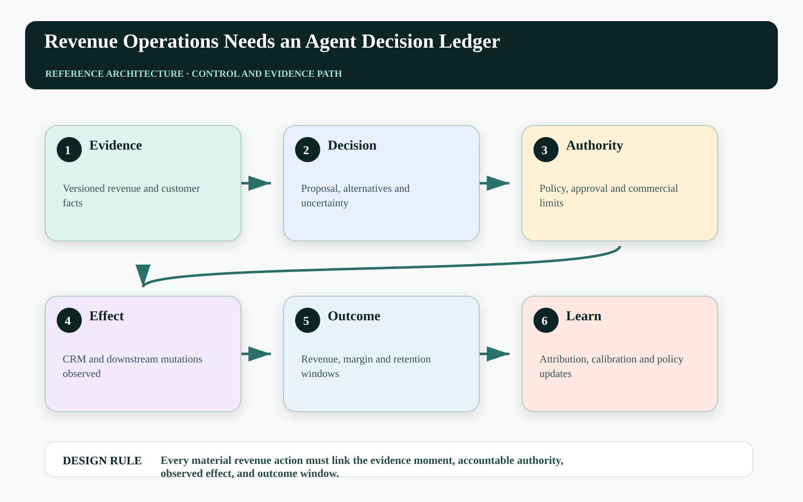
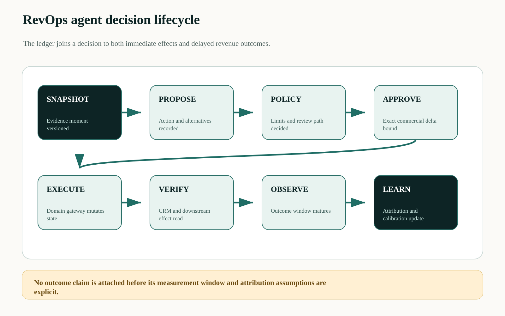
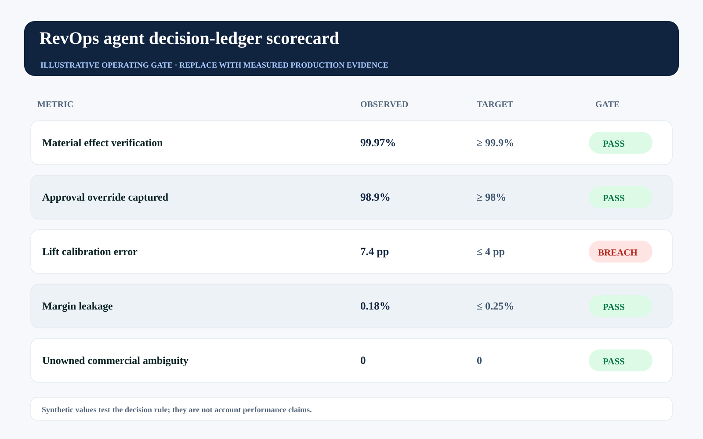

This story was developed with AI writing and visualization assistance. All incidents, thresholds, workloads, and operating values are illustrative unless a source is explicitly cited.
Revenue teams can often reconstruct what changed in CRM. They struggle to prove why it changed, which evidence the agent used, whether a human approved the exact commercial delta, what downstream systems observed, and whether the intervention improved revenue.
Adding more fields to the opportunity record does not solve this. CRM is optimized for current operational state. An agent decision ledger is optimized for causality, authority, versioned evidence, outcome attribution, and retrospective learning.
Keep CRM as a system of operational record; add a decision ledger as the system of accountable commercial action.

The latest field value erases the decision path#
An opportunity stage can move from commit to upside and back to commit in one day. The current row does not reveal which agent signal caused the first change, which seller overrode it, what quote version was approved, or whether the renewal closed because of the action or despite it.
Without stable decisions and counterfactual cohorts, RevOps can confuse activity with value. High acceptance may indicate useful recommendations, compliant reviewers, or rubber-stamping. More pipeline movement may represent improved truth—or unstable automation rewriting the forecast.
Separate operational state, decisions, and outcomes#
The evidence layer snapshots versioned CRM, support, product, finance, and conversation facts. The decision service records proposed action, alternatives, model route, policy, and uncertainty. Approval and permission services bind accountable authority. Domain gateways apply changes. Independent observers capture business effects. The outcome service joins later renewal, margin, retention, and customer signals.
The ledger is append-only at the decision level. Corrections create superseding records rather than rewriting history. Sensitive source content remains in its governed system; the ledger stores typed claims, references, digests, and permitted analytical projections.

Measure incremental value, not agent activity#
For a policy or intervention cohort, estimate risk-adjusted incremental value:
V_incremental = (P_outcome|treat - P_outcome|control) × MarginValue
- C_action - C_review - C_delay - E[L_commercial_error]
Calibration_gap = |predicted_lift - observed_lift| by segmentThe control may be randomized where appropriate, staggered, matched, or constructed with causal methods. The ledger cannot manufacture causality; it supplies the stable treatment, decision, effect, and outcome records required to assess it.
| Ledger record | Key fields | RevOps question |
|---|---|---|
| Evidence moment | source versions + claims | What was known then? |
| Decision | alternatives + predicted lift | Why this action? |
| Authority | policy + approver + limit | Who permitted the delta? |
| Effect | observed state + uniqueness | What actually changed? |
| Outcome | window + margin + segment | Did it create incremental value? |
Use one commercial action identifier across systems#
The identifier should travel from recommendation to revenue outcome:
{
"commercial_action_id": "revact_01K...",
"account": "A-1902",
"evidence_moment": "ev_882",
"proposal": {"action": "discount", "bps": 800},
"predicted_incremental_margin": 42000,
"policy": "pricing-2026.09.3",
"approval": "apr_52",
"effects": ["crm:quote:771:v43", "billing:adj:991"],
"outcome_window_days": 90
}CRM can store the current action link, but the ledger owns the immutable sequence. Finance and customer-success outcomes join later without overwriting the original prediction.
Build a decision-quality operating model#
Track recommendation coverage, acceptance by risk tier, approval override reason, time to decision, effect verification, margin leakage, predicted-versus-observed calibration, incremental outcome by cohort, and unresolved commercial actions. Avoid ranking sellers on raw agent acceptance.
The synthetic gate shows effect verification passing while calibration breaches. That tells RevOps to constrain or recalibrate the intervention—not to celebrate a high action count.

| Operating signal | Decision use | Failure interpretation |
|---|---|---|
| Lift calibration | Recalibrate by segment | Predicted value is not decision-grade |
| Override reasons | Improve policy or evidence | Humans see systematic missing context |
| Effect verification | Stop outcome attribution if incomplete | Treatment state is uncertain |
| Margin leakage | Tighten limits and approval | Commercial authority is too broad |
Failure-injection before production#
A design review cannot prove Every material revenue action must link the evidence moment, accountable authority, observed effect, and outcome window. The pre-production harness must interrupt the system at the transitions where ownership, authority, evidence, and business state can disagree. The objective is not to maximize a generic pass rate. It is to demonstrate that every material fault produces a bounded state, a named owner, and an admissible recovery transition.
| Injected fault | Experiment | Required evidence |
|---|---|---|
| Delayed or reordered work | Pause the path after PROPOSE and release it after EXECUTE | The stale path cannot manufacture terminal success |
| Authority becomes stale | Advance policy, mode, ownership, or resource version before effect commit | The final gateway rejects the old decision context |
| Evidence is missing or corrupted | Remove one authoritative observation or change its digest | The outcome remains violated, inconclusive, or owned—never guessed |
| Recovery itself fails | Interrupt compensation, handoff, or receipt closure | The action stays visible with an owner, deadline, and next legal transition |
Run the matrix at concurrency, with realistic dependency lag and with the same policy and gateway versions used in the candidate release. Report p95 and p99 resolution alongside the worst unresolved example. Averages can demonstrate throughput; they cannot erase a single material breach. Promotion should require replayable evidence for the controls, not a slide stating that the team considered the risk.
Three questions for the architecture review#
Where is truth decided? Name the authoritative source and the exact component permitted to advance the workflow into a terminal state. If the answer is ‘the agent interprets the tool response,’ the boundary is not yet independent.
Where is authority finally enforced? Follow the command through every queue, adapter, cache, provider, and downstream effect. A policy decision is useful only when the last material write boundary can reject a stale, changed, or excessive action.
What blocks promotion? Convert the scorecard into executable gates with owners and expiry. A breached tail metric must reduce scope, hold the cohort, or enter an approved exception path; it cannot remain decorative telemetry.
A practical implementation sequence#
1. Choose one revenue decision. Start with discount, renewal risk, forecast override, or next-best action—not every CRM event.
2. Propagate one action ID. Link evidence, recommendation, approval, permission, CRM effect, billing effect, and outcome window.
3. Run a decision review. Compare predicted and observed lift by segment, inspect overrides, and update policy without rewriting the ledger.
Primary references and boundaries#
The OpenTelemetry specification overview provides concepts for correlating distributed execution signals. The NIST AI RMF Core emphasizes documented context, benefits, risks, monitoring, and ongoing management. Neither defines this RevOps ledger; it is a domain architecture proposal.
Incremental revenue measurement requires careful experimental or causal design. The illustrative formula and metrics are not claims about a deployed account, and the ledger should not be used as a simplistic employee-surveillance or performance-ranking system.
The operating conclusion#
RevOps should be able to move from ‘the agent changed the CRM’ to ‘this approved decision used these facts, created this verified effect, consumed this commercial authority, and produced this measured outcome under these attribution assumptions.’ That is the foundation for scaling revenue agents responsibly.
Can your CRM explain the causal and authority path behind its most important automated field change?